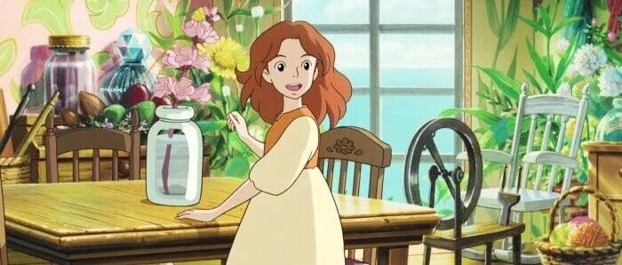

2层Loft，给大家看看我的房间吧！
点击关注秋秋很开心
每周一篇好用APP、学习、成长干货

图：@网络
文：@秋秋
大家好，我是秋秋。
说起来我搬进新家已经半年多了，之前在北京朝阳住，位置不错，是这个样子的。

新家在小王同学公司附近，2层Loft。
我有了办公室也有了大阳台，是这个样子的。

北京房租比较贵，我们现在住的地方也在5环外。
不过我认为房子是租来的，生活不是。接下来就带大家参观下我们的小家了～

首先最外面是一个大露台，落地窗可以看到每天的日出。
我经常躺这里看书，里面有张桌子，也可以放东西、喝喝茶。

现在我们又养了很多花，都放在露台上。
这里就是我们的餐桌了，也是我平时追剧的地方。

小王同学白天上班不在家，所以我都是自己做饭吃。之前我也不会做饭，还给自己定了一个月会一道菜的目标。
不知不觉手艺还见长，也会几样拿手菜啦～
他朋友来我家，我也能亲自下厨、招待他们。

我们家的厨房很大，但因为我自己做饭调料不多，就不给大家看了。
紧接着这里，就是我们小阳台，也是上去二层的地方。

这个地方晚上可以看到星星哦～
元宵节过年放烟花的时候，都看的一清二楚，很有feel 🎆。
上去有两个房间，左边是卧室，放了一张床和小王的书桌，有独立的洗手间。
接下来重点，就是右边，我自己的办公室+独立休闲室了！
这间屋子位于房子二层，靠近阳光的那一间。

窗户边我放了书桌，因为采光很好能看到外面。
桌子很大，我的打印机、手帐胶带、拍摄灯、电脑、显示器都在上面，隔一段时间我也会调整一下布局。


有时候它是这个样子：

有时候它是这个样子：

旁边还有一个置物架，放着我的常用道具之类的。
写文章的时候，我会抬头看看窗外，因为工作日不常出门，也算和外界有了接触。
说起来，我一天6、7个小时都是在这张书桌前，有时候拍剪废寝忘食，能从下午2点搞到晚上10点。

里面这里放了一张床，是我午休的时候用的。
写东西拍视频累了，我就躺一躺，夏天开着空调，冬天有暖气都挺舒服的。

床上的布偶是奋斗兔，睡觉的时候喜欢抱着，特别香。
靠近墙的这一边，是我的书橱和置物架啦。

因为不用上班，所以看书的时间很多，不知不觉就有好多书。
第一层就是轻松有趣的～
第二层第三层是专业的书，最下面是一些杂物。

右面的架子是我店铺的一些参考样品，我也会收集自己喜欢的创意产品放这里。
没事的时候我就看看书，打理打理东西，拍摄剪辑做视频、写作，感觉不知不觉能在这待一整天。
门口还有一个懒人沙发，我也经常挪动位置。

从这个角度可以看到楼下，也正好可以看到每天的日落。
所以我不用电脑剪辑的时候，都是用手机瘫在这里剪片子。
看看日落，感觉心情很好。
上面也是我家小猫的床，橘橘也天天陪着我。
总之，这就是我的小房子了，我很喜欢这个小家。
英国作家弗吉尼亚·伍尔夫说过：“一个女人如果要写小说，一年要有钱，还要有一间自己的房间。”
在这样的一间屋子里，你“用不着慌，用不着发出光芒。除了自己以外，用不着做任何人。”

当时，在十九世纪初，中产阶级家庭全家只有一间起居室。
女人要写作，必须是在家人共用的起居室。
这样全家人进进出出，各种琐事打扰，很难有自己独立的写作时间。作家简·奥斯丁，一生都是在这种状态下写作的。
所以现在的我们是幸运的，拥有一个属于自己的小天地真的是幸福的～
我很喜欢我的小家。
希望以后也可以买一套属于自己的小房子，到时候一定会把它装成自己喜欢的样子，留出独属于自己的空间。
☕️ 更 多 内 容：


原创文章，转载请告知本人并标注来源
粉丝vx：qiuqiu5261（朋友圈更新日常）
商务合作：17865514429 （微信）
请注明来意 :)
@小红书：秋秋很开心
喜欢记得星标，让我们一起成长